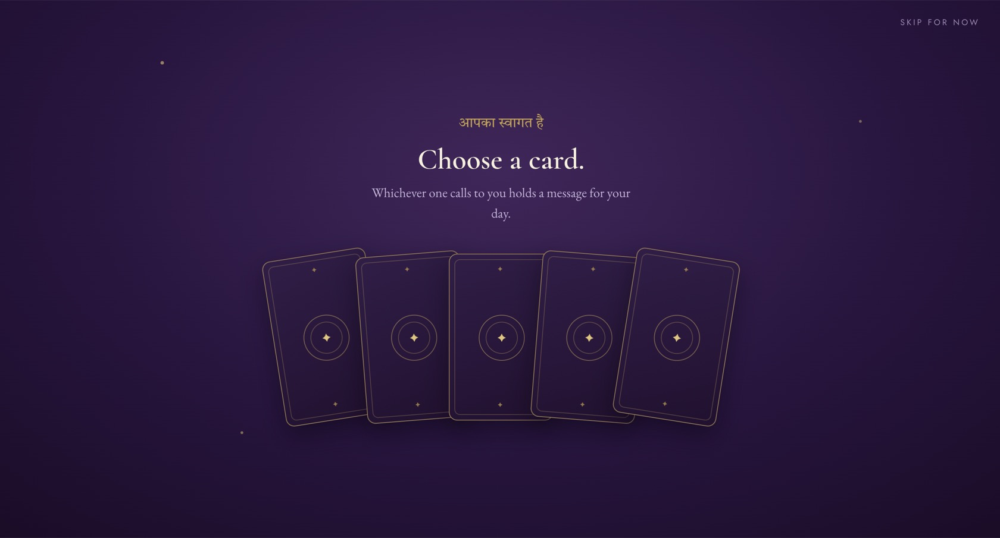

CS/06 · Holistic healing · India and global
Raahat by Binita is holistic healing, tarot and energy work. We shaped the whole thing from the name up: the R mark, the brand, the website. Instagram is next.
Heal. Align. Awaken. Manifest.

The brief
Binita heals for a living, but online her work looked like everyone else’s: stock tarot art and prediction promises. She wanted a presence as considered and safe as her sessions. We built the whole thing from the name up: the R mark, the plum and gold identity, and a website that turns a quiet, curious visitor into a discovery call.
The work

By the numbers
Logo, brand and website, all ours. Instagram in build.
Next up
The website is live and doing its job. Now we are building the feed to match: the same plum and gold, the same voice, and content that sends people back to the discovery call rather than into the scroll.
We build the funnel. You take the cake.